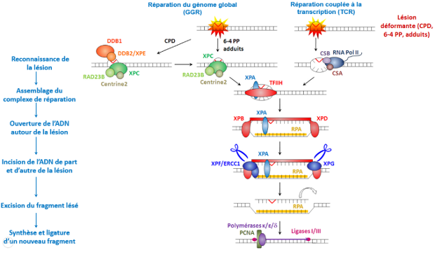
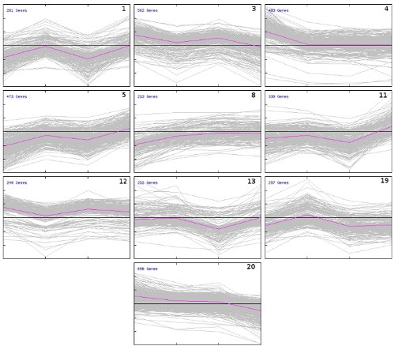
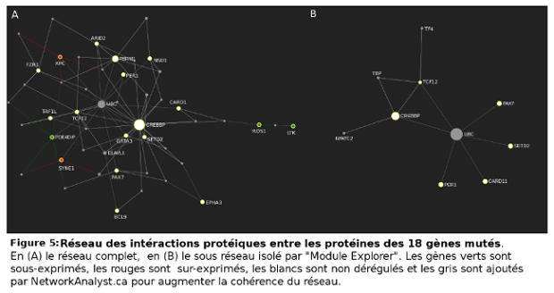

Analyse bioinformatique des événements moléculaires survenant dans des cellules de peau prélevée sur des patients atteints de Xeroderma pigmentosum irradiés chroniquement à faible dose d'UVB.
Le Xeroderma pigmentosum (XP) est une maladie génétique rare caractérisée par une forte prédisposition aux cancers de la peau suite à des expositions minimums aux ultraviolets (UV).

Dans cette étude, nous avons essayé de trouver les événements qui mènent des cellules de peau (kératinocytes) XP à adopter des caractéristiques hyper-proliferatives et invasives après des radiations UV. À ce but, nous avons analysé des données transcriptomiques et génomiques, provenant de ces kératinocytes irradiés, grâce à des outils bio-informatique incluant la manipuplation de tableau par des scripts python et des outils de correspondance, d'annotation et de clustering (reconnaissance de groupes).

Cette étude nous a conduits à de nouvelles pistes à explorer. Nous avons trouvé plusieurs listes de transcrits dérégulés correspondant au cycle cellulaire, à la réparation d'ADN et à différentes annotations du métabolisme. Dans toute la liste des gènes mutés, deux gènes sont haplo-insuffisants (la mutation d'une seule version du gène entraîne une modification des caractères) ce qui peut potentiellement endommager l'homéostase cellulaire.

Tout ces gènes et ces transcrits sont des cibles intéressantes pour comprendre ce qui se passe dans ces cellules à l'échelle moléculaire suite à des radiations UV.